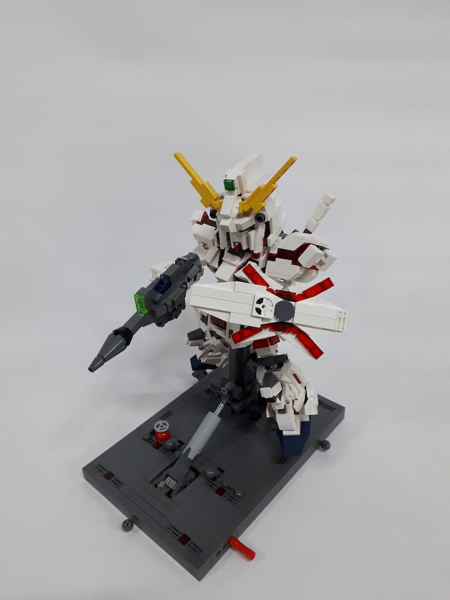
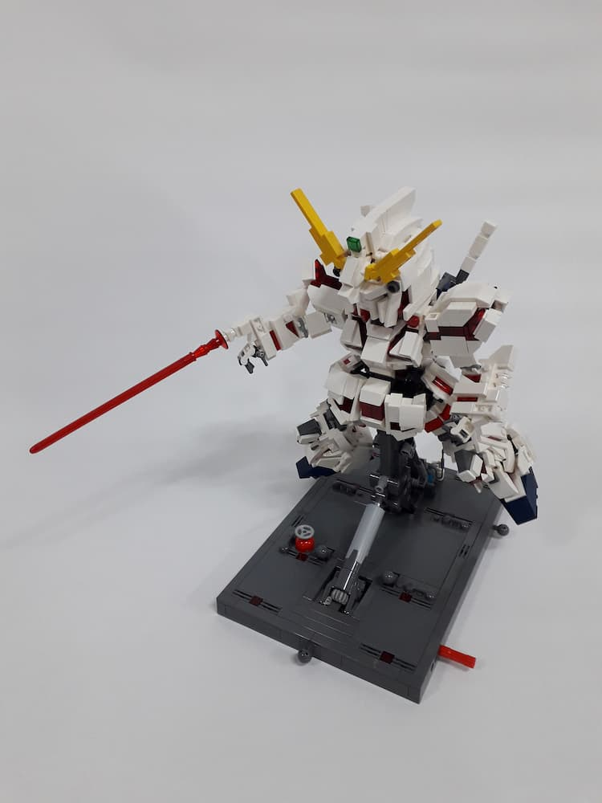
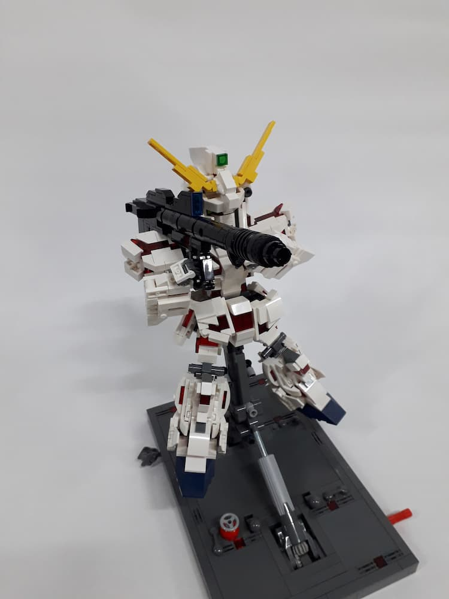
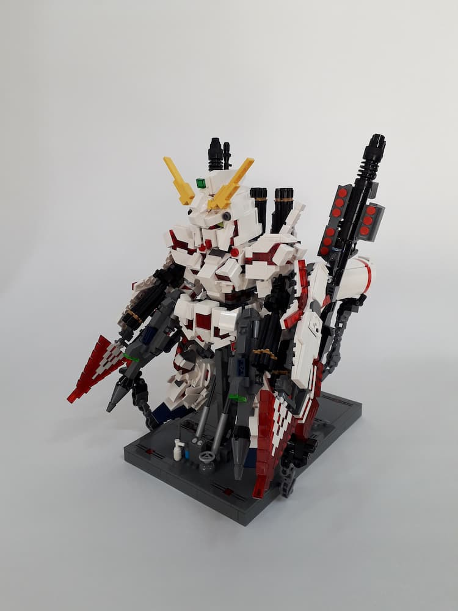
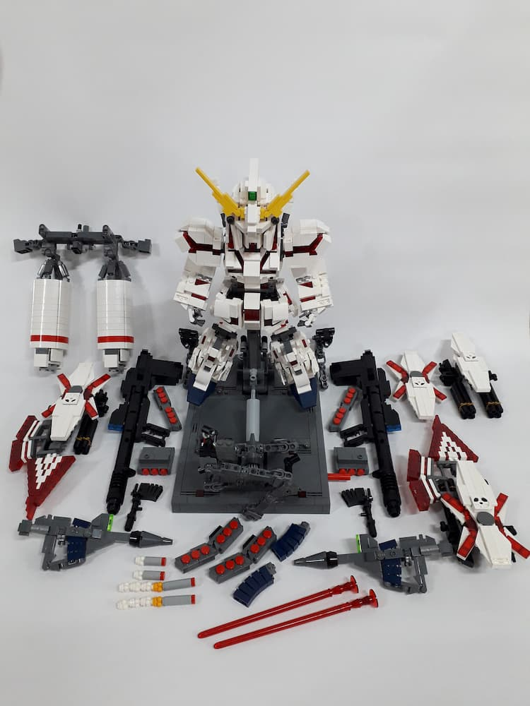
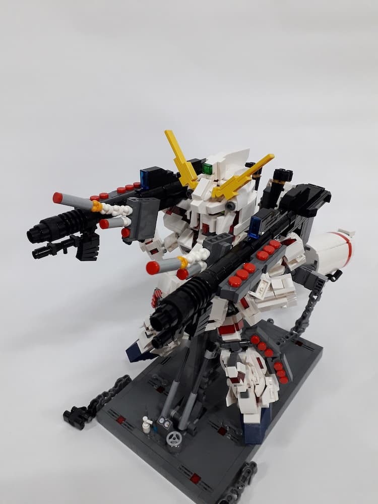

유니콘 건담
1 / 3
라이플 장비
2 / 3

빔 사벨
3 / 3

바주카
❮
❯
처음에는 말장난으로 시작해 컴퓨터 툴로 만들던 것을
일이 커지자 본격적으로 실물로 완성, 곧 작품이 되었죠.
머리의 구조는 일본의 창작가 MOKO의 기법을 활용했습니다.
그에게 기법을 활용했다 말하자 조용히 ♥를 누르는 것으로 대답을 대신하였습니다.
1 / 3

풀아머 유니콘
2 / 3

구성
3 / 3

무기 발사
❮
❯
≪기동전사 건담 UC≫에 등장하는 유니콘 건담에게는 바리에이션이 있죠.
바로 풀아머 유니콘입니다.